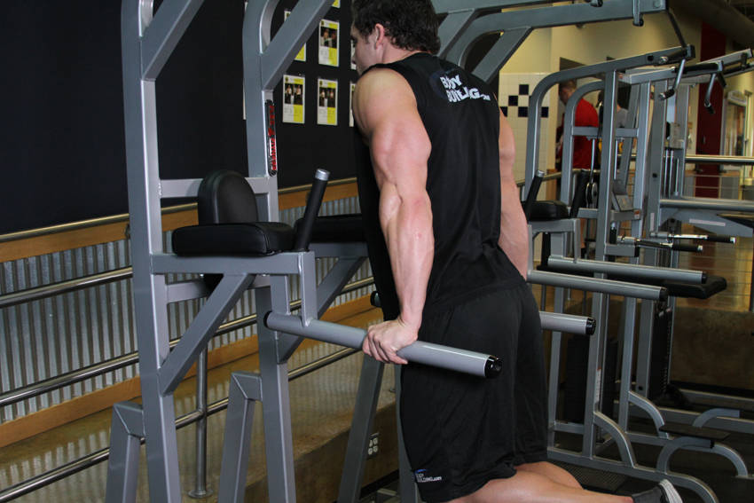
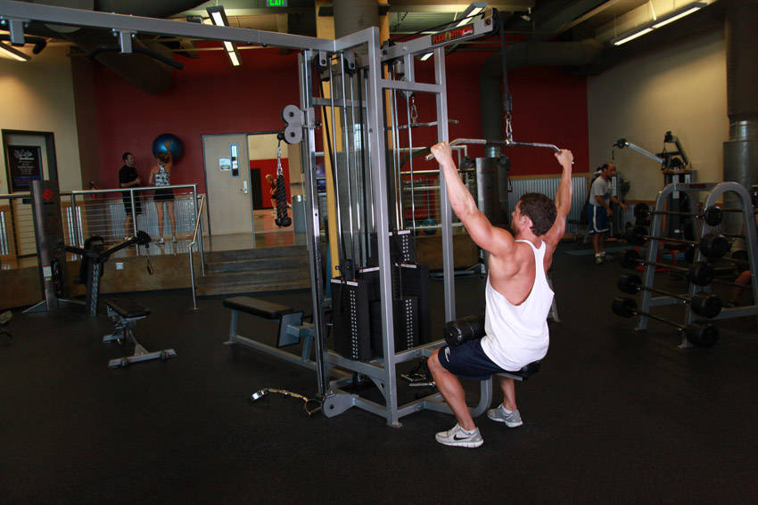
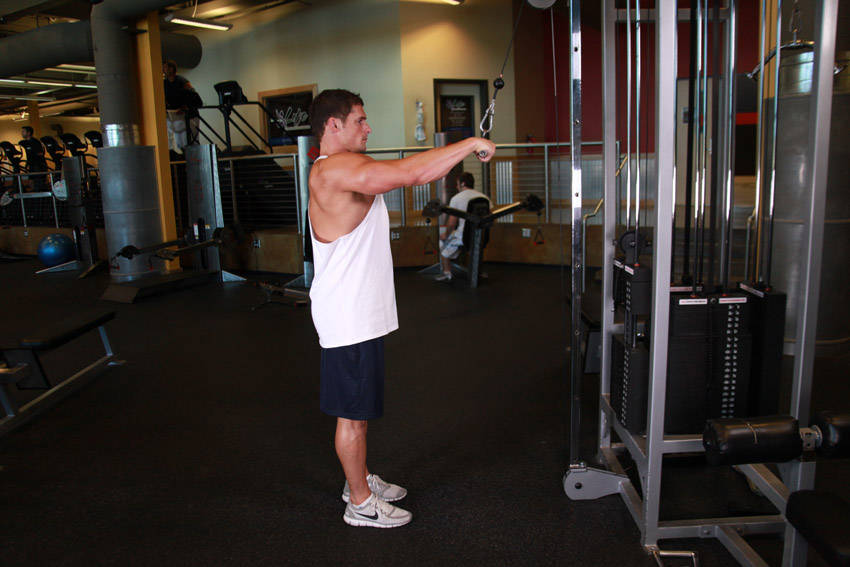
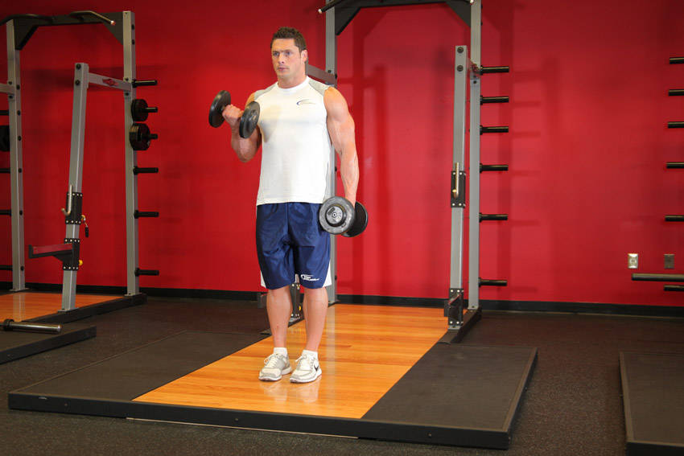
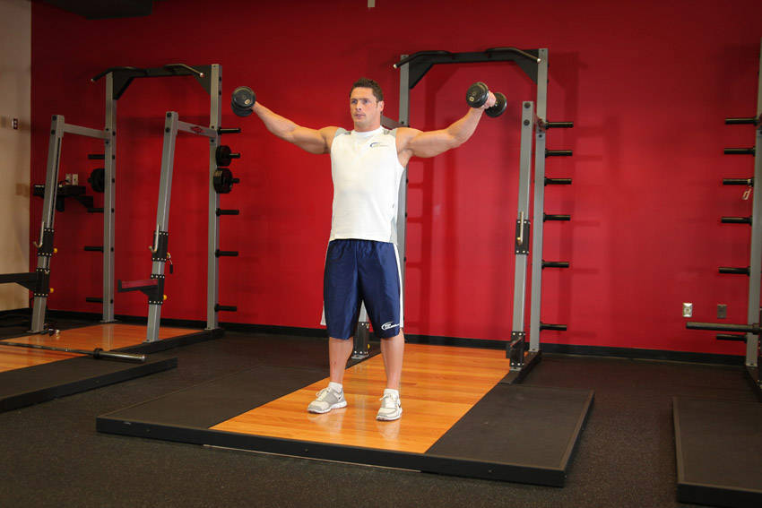

杠铃平板卧推
Barbell_Bench_Press_-_Medium_Grip | 0 / 1
上斜哑铃卧推
Incline_Dumbbell_Press | 0 / 1
器械夹胸（蝴蝶机）
Butterfly | 0 / 1
俯卧撑
Pushups | 0 / 1
绳索下压
Triceps_Pushdown_-_Rope_Attachment | 0 / 1
双杠臂屈伸


Dips_-_Triceps_Version | 0 / 1
辅助引体向上
Band_Assisted_Pull-Up | 0 / 1
坐姿划船
Seated_Cable_Rows | 0 / 1
高位下拉


Wide-Grip_Lat_Pulldown | 0 / 1
直臂下压


Straight-Arm_Pulldown | 0 / 1
杠铃弯举
Barbell_Curl | 0 / 1
站姿哑铃交替弯举


Dumbbell_Alternate_Bicep_Curl | 0 / 1
坐姿哑铃推肩
Dumbbell_Shoulder_Press | 0 / 1
哑铃侧平举


Side_Lateral_Raise | 0 / 1
俯身哑铃反向飞鸟
Bent_Over_Dumbbell_Rear_Delt_Raise_With_Head_On_Bench | 0 / 1
绳索面拉
Face_Pull | 0 / 1
悬垂屈膝举腿
Hanging_Leg_Raise | 0 / 1
平板支撑
Plank | 0 / 1